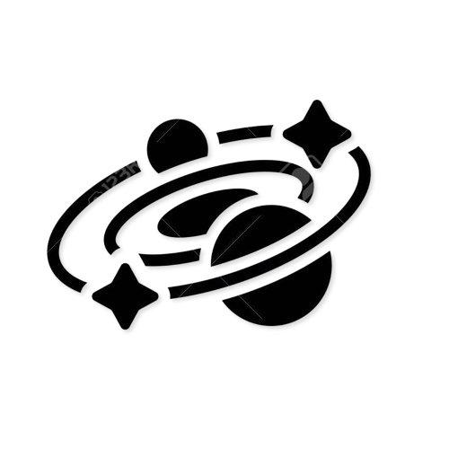

Research fellowship
Department of Physics and Astronomy “G. Galilei”, University of Padova, with INFN Padova.

About
I am a researcher in astrophysics and cosmology working at the intersection of astronomical data analysis, scientific computing, and artificial intelligence. At the University of Padova and INFN Padova, my current work focuses on calibration and systematic effects for Euclid’s NISP instrument. My broader research spans strong gravitational lensing, galaxy kinematics, cosmological simulations, large-scale structure, dark energy, and machine learning for astrophysics.
Current activities grounded in institutional and project records.
Department of Physics and Astronomy “G. Galilei”, University of Padova, with INFN Padova.
Calibration-product trend analysis, flat-field stability, detector persistence, systematics, and image-processing workflows.
Machine learning for astronomical images, cosmological simulations, lens detection, galaxy dynamics, and anomaly detection.
Instrumentation and calibration meet computational cosmology and scientific machine learning.
Euclid / NISP
Monitoring NISP calibration products and detector behavior—including flat-field stability and persistence—to understand how instrumental effects propagate into scientific measurements.
Persistence studyAI for Astrophysics
Computer-vision methods for rare strong-lens discovery and convolutional neural networks with explainability techniques for stellar rotation maps and galaxy evolution.
Strong lenses · Galaxy kinematicsCosmology
Relativistic N-body simulations and learning from three-dimensional density fields to test clustering dark-energy models beyond summary statistics.
ClusterNets · 3D CNN projectInterdisciplinary AI
How computer-vision methods, validation practices, and domain knowledge can transfer between astronomical and biomedical imaging.
Related publicationPeer-reviewed work, newest first, with publisher and open-access records.
Research, publications, education, talks, conferences, and service.
Shown only where public records establish the institution and period.
M.Sc. studies · Gravity and Cosmology
Department of Physics, Shahid Beheshti University · Tehran, Iran
Research in cosmological simulations and machine-learning approaches to clustering dark energy, supervised by Nima Khosravi with research collaboration involving Farbod Hassani and Martin Kunz.
Related publicationMethods demonstrated in publications, repositories, and current research.
Python · C++ · Bash · Linux · Git · HPC workflows
CNNs · ensemble learning · autoencoders · explainable AI · computer vision
gevolution · relativistic N-body simulations · Pylians · large-scale structure
Detector calibration · image processing · kinematic maps · hyperspectral data
Research discussions, collaborations, and academic enquiries.
Amirmohammad Chegeni
Department of Physics and Astronomy “G. Galilei”
University of Padova · INFN Padova